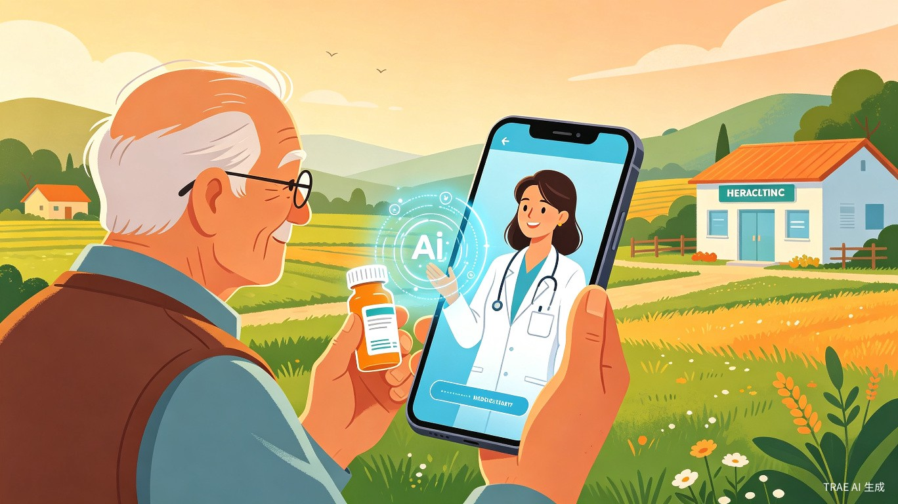
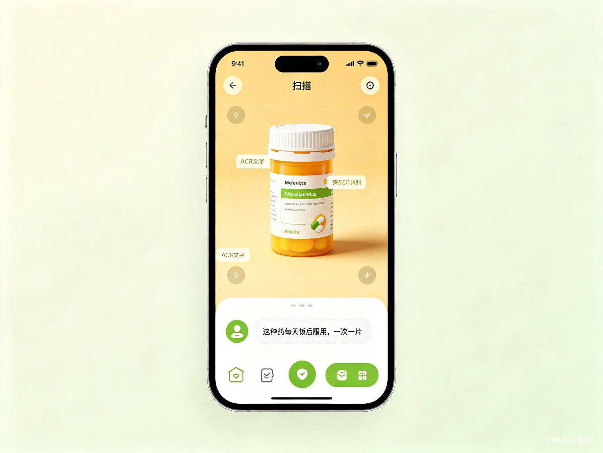

我国农村及偏远地区居民长期面临专业医疗资源匮乏的困境，村民在用药时常常出现乱用药、药物过期未察觉、多种药物混用等安全隐患，严重时甚至危及生命。
团队一位成员的爷爷生活在农村，曾因看不清药品说明书、误服过期药物而紧急送医。这让我们意识到：对于偏远地区的老人和孩子来说，一次简单的用药指导可能就是一道生命防线。
一款面向农村及偏远地区居民的微信小程序/轻量 App，通过拍照识别药品信息，结合 AI 大模型提供用药问答服务，让村民随时随地获得专业、易懂的用药指导。
农村留守老人、留守儿童监护人、基层村医、偏远地区务工人员等。
老人拿到药后不知道每天吃几次；孩子发烧时家长不确定能否混用退烧药；村医想快速核对药物相互作用；外出务工人员远程指导家中老人用药……
没有我们的产品时，用户面临：药品说明书字太小看不清、专业术语看不懂、不知道药物是否过期、多种药物能否同吃心里没底、附近没有药店或医院可咨询——这些看似琐碎的问题，累积成了巨大的用药安全黑洞。
让每一次用药都有据可依，让每一个乡村家庭都能享受 AI 带来的医疗信息平权。
一键拍摄药品包装，AI 自动识别药名、规格、有效期
用大白话解答"怎么吃""能不能一起吃"等实际问题
自动识别药品有效期，临期/过期主动预警
多种药物同时服用时，智能检测潜在冲突风险
降低农村用药安全风险，填补基层医疗信息鸿沟。通过 AI 技术将专业药学知识"翻译"成村民听得懂的语言，让偏远地区居民也能享受到与城市同等质量的用药指导服务，助力乡村振兴与健康中国战略。
村民无需跑腿咨询，3 秒拍照即可获得专业指导；村医可借助 AI 快速复核处方，提升基层医疗服务效率；家庭成员可远程关注老人用药情况，实现亲情守护。
